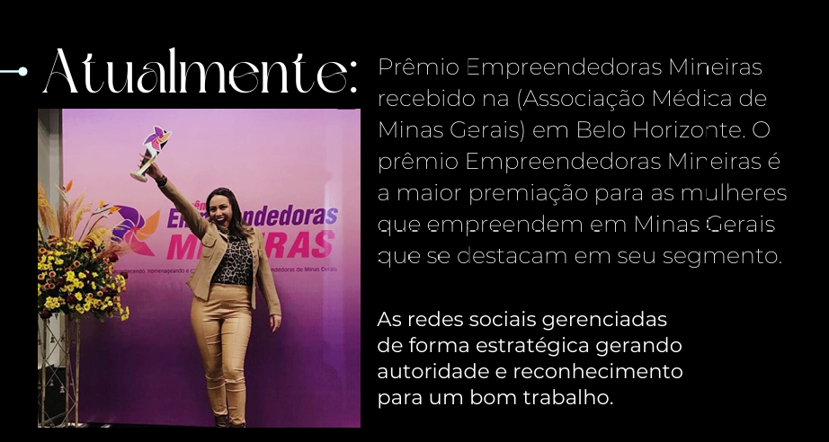
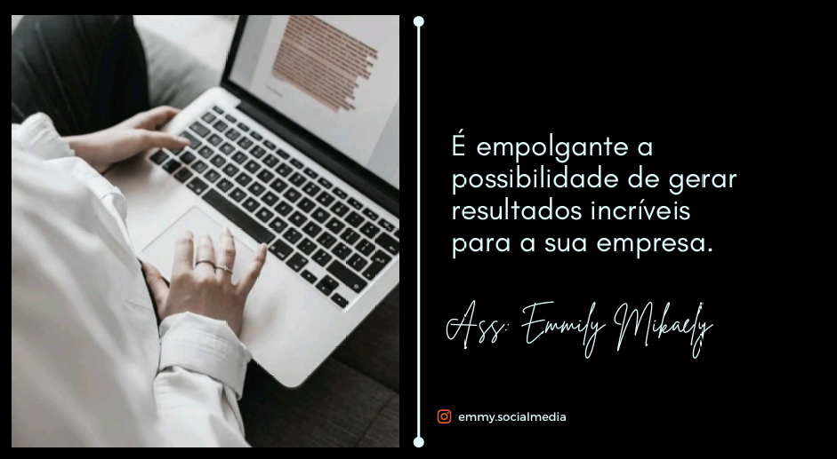

Sobre Mim
♟️ Transformo o seu negócio no digital com estratégia.
▪ Gestão de redes sociais
▫ Marketing Digital
▪ Gestão de anúncios
Qual é o meu trabalho?
O meu principal objetivo é otimizar os canais digitais para gerar lucro, melhorar o posicionamento e aumentar o reconhecimento digital de cada negócio.
Emmily, qual é o plano?

Ainda não está convencido? Ok, eu vou te mostrar os resultados

Dados do empreendedorismo feminino no Brasil Cerca de 46% dos empreendedores iniciais são mulheres, e 40% das empreendedoras iniciais pretendem abrir de uma a cinco vagas de emprego. Além disso, 51% das empreendedoras são chefes de domicílio, a principal tomadora de decisão sobre as compras.

Após a implementação de um projeto de marketing no Instagram, o perfil comercial da empresa pode sofrer uma grande melhoria. A visibilidade da marca aumenta, graças a estratégias como a otimização de hashtags e conteúdos direcionados, que atraem um público mais relevante. O engajamento com os seguidores também cresce, refletindo numa interação mais próxima e direta com os clientes, por meio de publicações envolventes, stories e vídeos interativos.
Além disso, a consistência visual e de mensagem fortalece a identidade da marca, fazendo com que o público a reconheça facilmente. Como resultado, há um aumento nas conversões, com mais leads qualificados sendo gerados diretamente pelo Instagram. Isso transforma o perfil numa vitrine digital eficaz, impulsionando tanto o crescimento da marca quanto os resultados financeiros.

A propaganda é considerada a alma do negócio no marketing digital porque é através dela que as empresas conseguem promover seus produtos ou serviços de forma eficiente, atingir o público-alvo certo e se destacar em um mercado competitivo.

Por essas razões, a propaganda no marketing digital é essencial para garantir que o público saiba sobre a marca, seus produtos e serviços, e, mais importante, que interaja e converta, seja em vendas ou em ações de engajamento.

No nicho da moda, o marketing digital, especialmente no Instagram, é essencial para alcançar o público certo. O trabalho em equipe, envolvendo criadores de conteúdo e analistas, garante campanhas eficazes e visuais atraentes. A aparência, tanto dos produtos quanto dos profissionais, é vital, pois reflete a identidade da marca e influencia a percepção dos seguidores.

O marketing voltado para saúde, academia e alimentação saudável está em franca expansão. Especialistas estão desenvolvendo campanhas eficazes que combinam conteúdo relevante sobre exercícios e nutrição com experiências personalizadas para os consumidores. Utilizando depoimentos reais e parcerias com influenciadores, essas estratégias buscam inspirar mudanças positivas e promover um estilo de vida saudável. A educação contínua e o engajamento ativo com o público são essenciais para garantir resultados impactantes e construir uma marca de sucesso no setor de saúde e bem-estar.

Conteúdos de marketing de qualidade melhoram a conscientização sobre produtos e serviços, aprimoram a experiência do cliente e fortalecem a lealdade à marca. Eles criam experiências memoráveis e permitem ajustes baseados no feedback dos clientes. Em suma, bom conteúdo promove produtos e enriquece a vida dos clientes.

Transforme Suas Redes Sociais com Marketing de Conteúdo Estratégico

Se você busca não apenas presença online, mas um impacto real que transmita a personalidade única do seu negócio, meu serviço é exatamente o que você precisa. Vamos trabalhar juntos para criar uma estratégia de conteúdo que não apenas engaje, mas também destaque sua marca de forma autêntica e eficaz. Entre em contato e descubra como podemos transformar suas redes sociais em uma poderosa ferramenta de crescimento!
